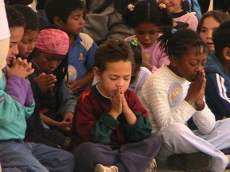

La honestidad en el ateísmo es importante, por ser honestos es que no creemos en dioses

¿Cómo pensar por un segundo que un ateo mentirá a sus hijos sobre la existencia de dios? ¿Por qué alguien que cree que no hay dioses querría que sus hijos estuvieran expuestos a doctrinas que piensa son falsas?
“El nihilismo es un fertilizante para la ansiedad y la depresión y ser ‘realista’ está sobrevalorado. La fe en Dios, en una figura protectora y orientadora en la que confiar cuando los tiempos son difíciles es uno de los mejores tipos de apoyo para los niños en un mundo cada vez más pesimista”.
Esto lo escribió para el periódico The Wall Street la psicóloga Erica Komisar, quien, aparentemente, tiene una idea de los ateos originada en los tiempos de la inquisición o algo similar. Mi hijo creció sin dioses. No soy nihilista y tengo, más que moral, ética, soy empática y leo más allá de la Biblia. Para mí la realidad a la que ella se refiere no es cruda. La cruel realidad es la que vemos todo el tiempo por el mundo sin ninguna evidencia de que dioses y demonios hayan participado en ella. Si desde el principio no somos honestos con nosotros mismos y nuestros hijos, probablemente no tendremos una buena relación con ellos. Y lo peor de todo es que la mentira, no sólo está condenada como pecado en la Biblia, (que seguro es el libro preferido de la señora Komisar) sino que cualquier académico que se respete te dirá que la honestidad siempre será preferible en cualquier relación, especialmente la relación que deseamos sostener con nuestros hijos.
Pero no todo es malo en las religiones. De acuerdo con Lisa Pearce, socióloga de la Universidad de Carolina del Norte en Chapel Hill, las instituciones religiosas ofrecen sistemas formales de apoyo a las familias, especialmente a las que los necesitan. Y las actividades organizadas por estas instituciones ofrecen la oportunidad de pasar tiempo juntos y ser parte de la misma comunidad. De hecho, la parte de la comunidad parece ser especialmente importante, “es probable que los miembros de la familia que participan en la misma institución religiosa tengan un conjunto de vínculos sociales que comparten con otros miembros de esa institución religiosa”.
Y estamos tan acostumbrados a escuchar a los niños quejarse porque los quieren llevar a las iglesias cuando prefieren quedarse en casa jugando videojuegos (en esta parte estoy completamente de acuerdo con los niños), y que es interesante ver que todo depende de qué tan ligado a la religión de sus padres está el cerebro del niño. Annette Mahoney, autora del libro El mejor amor del niño: ser amado y enseñar a amar como el primer ser humano y profesora de psicología en la Universidad del Estado en Bowling Green, escribió en su libro:
“Los beneficios de la religión para los adolescentes parecen atribuirse en gran medida a las diferencias entre los adolescentes más comprometidos con la religión en comparación con los que no están comprometidos con la religión. De hecho, para aproximadamente el 53% de los adolescentes estadounidenses cuya fe es esporádica o mal integrada la religiosidad inconsistente aporta poco o ningún beneficio. En términos prácticos, esto significa que puedes presionar a tus hijos para que vayan a la iglesia los domingos o que oren o recen cinco veces al día, pero si no creen, seguir las normas religiosas no les dará ninguna de sus ventajas prosociales y de desarrollo. Además, los niños no religiosos no necesariamente sufrirán ningún resultado negativo. También puedes sacar buenas notas, ser feliz, hacer ejercicio y cooperar con otros sin religión”.
Lo importante, más bien, es no mentirles a tus hijos. Si nos fijamos bien, los derechos de la niñez (como los de tantos otros) siguen siendo burlados todo el tiempo, muchos apresados en creencias que pueden dejarlos malogrados de por vida. En muchos lugares, los niños sufren directamente las consecuencias de ataques religiosos contra la religión de su familia, muchas familias han sido destruidas en el nombre de algún dios, y mayormente son destruidas por otras religiones. Los extremistas religiosos pueden convertir a niños y adolescentes en terroristas suicidas con ideas fantásticas de sexo con mujeres vírgenes en el cielo, las mujeres han sido despojadas de sus derechos, de sus opciones, de sus libertades en lugares donde religiones con normas estrictas tienen el control del gobierno. Son dictaduras religiosas que no benefician a nadie, mucho menos a los niños.
Por otro lado, las religiones cristianas se dividen en tantas que es imposible recogerlas a todas con la misma interpretación, en algunas Jesús nos ama a todos, en otras excluyen a los homosexuales, a los no creyentes (especialmente a los ateos) y sostienen esa absurda idea de que la mujer debe obedecer al hombre, al marido, al esposo, que debe ser virgen y acoger la abstinencia en asuntos sexuales hasta el matrimonio; todo esto no puede crear reacciones positivas en los hijos. En una casa donde los prejuicios y la intolerancia vienen en nombre de un dios, los resultados en los niños suelen ser negativos.
“Los niños, como los adultos, tienen la libertad de elegir y practicar su religión, derecho que está protegido por el artículo 14 de la Convención sobre los Derechos del Niño: “Los Estados Partes respetarán el derecho del niño a la libertad de pensamiento, conciencia y religión”, escribe Marie Philippe para Humanium.
Esa es la libertad que se pierde en pensamientos como los que sostiene Komisar. Existen sociedades ahora mismo que están completamente controladas por las religiones, donde la duda es asfixiada lentamente y decir que no crees en dios es tomado como blasfemia, algo que puede ser castigado de muchas formas. Los niños sufren directamente con las normas de las religiones. Para mí, la idea de un ser invisible, con poder para el castigo y la recompensa y que te está observando todo el tiempo no es preferible al ateísmo. La moral bíblica es absurda, contradictoria, sexualmente desacertada, con fantasías que destruyen cualquier chispa que tenga sentido o lógica.
Pero no mientan. Si te digo que no debes hablarle a tu hijo de dios, tú, una persona con fe, ¿me vas a hacer caso? Por supuesto que no. Si crees que dios existe, eso es lo que deben saber tus hijos de ti y si no crees en ningún dios, también.
“Criar a mis hijos ha transformado mi perspectiva sobre la religión. No quiero que mis hijos enfrenten prejuicios por sus creencias y no quiero que sientan prejuicios hacia nadie más. En algún nivel fundamental, creo que la paz mundial comienza cuando le enseño a mis hijos el respeto por la libertad y la diversidad. Y a lo mejor te preguntes ¿cómo fue que una buena niña judía bat mitzvá se convirtió en una creyente franca de que Dieu n’exist pas? El feminismo, culpemos al feminismo. Todo el mundo lo hace”.
Esas son las palabras de Julie Drizin, periodista de la revista Salon y ganadora del premio al Periodismo Meritorio en Estados Unidos. Drizin describió lo que ha sido para ella criar a sus hijos sin religiones ni dioses y, para Drizin, el humanismo ha sido el sustituto de Dios.
“Si me voy a referir a un ser superior, me gusta pensar en lo mejor del ser humano”.
Y eso es precisamente lo que personas como Komisar olvidan, la vida no necesita de dioses para que le demos un propósito, para que la disfrutemos, para que usemos lo mejor que tenemos y ayudemos a los demás animales y al planeta. Las religiones han estado con nosotros por milenios y milenios, sin embargo, la pobreza continúa, la violencia no se detiene, las guerras entre tribus religiosas son algo normal en muchos lugares, la persecución es el pan de muchos religiosos todos los días y el planeta continúa su trayectoria hacia lo peor. Las religiones no han solucionado nada. Solo cuando los gobiernos han estado abiertos a la ciencia, el progreso arranca.
¿Cómo pensar por un segundo que una persona sin religiones mentirá a sus hijos sobre la bondad de las religiones? ¿Por qué alguien que cree que no hay dioses querría que sus hijos estuvieran expuestos a doctrinas que piensa que son falsas? No sé si Komisar tendrá hijos, pero a lo mejor es ella la que está mintiendo mientras piensa otra cosa por dentro. Es como aquella apuesta de Pascal donde dice que si no sabemos con certeza si existe un dios, es mejor creer en él pues no tenemos nada que perder… lo cual es lo mismo que darle una patada a tu realidad para irte a vivir con las hadas.
En mi caso, como madre atea, todo comenzó cuando una prima se llevó a mi hijo a su iglesia evangélica, tendría como 5 años. Lo hizo sin mi permiso, que es algo que los religiosos llevan integrado en sus sistemas de creencias: “lo hago para salvarte, te estoy haciendo un bien”. Ese día me senté con mi hijo y comenzamos a ver un libro que compré que definía y describía todas las religiones. El libro estaba repleto de imágenes (olvidé su nombre, pero cualquier libro con imágenes sobre las religiones en el mundo te servirá), aquellas imágenes mostraban a las religiones como lo que son y era fácil que, sin yo decirlo, él lo descubriera: mitos y leyendas que como parásitos se han ceñido al mundo humano, con rituales y disfraces tan distintos como sus culturas, chupando el dinero de todos como viejos y entrenados vampiros.
Con mi hijo siempre fui honesta, en grados, mientras más pequeño era, más agradables eran mis historias. Y siempre le dije que era libre para elegir entre todas esas religiones. Hoy tiene 25 años, no cree en dioses y es una persona inteligente con una ética excelente, y no es porque soy su madre, que si se convierte en mormón lo seguiré amando (aunque lloraré por las noches).
Todo el mundo cría a sus hijos según sus creencias. De esa forma es que las religiones continúan ejerciendo su poder sobre todos, el número de miembros les regala el poder de controlar, de llevar sus ideas a gobiernos y conseguir más dinero. Siempre he dicho que las religiones son la peor empresa de relaciones públicas para sus dioses y profetas.

Fotografía de Irina Iriser
En un estudio publicado en American Sociological Review, Pearce y su colega William Axinn estudiaron a familias blancas de Detroit, EE. UU., mayormente cristianas, utilizando datos del Estudio de panel intergeneracional de madres y niños, el cual siguieron durante 23 años. Descubrieron que las madres que asisten a los servicios religiosos con regularidad, con o sin sus hijos, dijeron que a lo largo del tiempo siempre sintieron que tenían relaciones más positivas con sus hijos. Sin embargo, aunque las mamás que asistían a los servicios religiosos parecían percibir positivismo en las relaciones con sus hijos, lo mismo no parecía afectar las percepciones de los niños hacia sus madres.
Se ha demostrado que las diferencias en las creencias religiosas causan el mayor daño cuando niños moderadamente religiosos viven en hogares muy religiosos. Hemos visto cómo las relaciones familiares pueden empeorar si la religión se convierte en un tema polémico.
Un estudio de 2008 publicado en Social Science Research encontró que cuando los padres valoran la religión más que a sus hijos adolescentes, los adolescentes sienten que no tienen una buena relación con sus padres.
“Lo que hemos visto es que si los padres intentan presionar a sus hijos contra su voluntad para que recen de cierta forma o eviten cierto tipo de comida, van a generar tensiones dentro de la familia, tensiones que muchas veces son irreconciliables. Las diferencias en las creencias religiosas causan el mayor daño, especialmente en hogares muy religiosos”.
Por otro lado, un estudio realizado por los sociólogos Elaine Howard Ecklund Rice y Kristen Schultz Lee de la Universidad de Buffalo en los Estados Unidos, encontró que muchos ateos quieren exponer a sus hijos a la religión con el propósito de que puedan elegir en el futuro. La investigación, publicada en la Revista del Estudio de la Religión, se basó en entrevistas en profundidad con 275 científicos en 21 universidades de investigación “élite” en los Estados Unidos. El sesenta y uno por ciento de los participantes se describieron como ateos o agnósticos, el 17 por ciento de los no creyentes había asistido a la iglesia más de una vez en el último año.
Y es que exponer libremente a tus hijos a las religiones probablemente los convertirá en no creyentes. Las religiones nos han vendido la idea de que la única evidencia que necesitamos la tienen ellos, que son empleados directos de un dios en los cielos y que debemos creer en él con certeza. De hecho, el cristianismo nos ha vendido libros sagrados escritos por hombres donde las mujeres somos representadas como inferiores, donde nuestros derechos mueren en casi todas sus páginas.
Por eso Drizin le otorga su ateísmo al feminismo. Los libros sagrados de las religiones más importantes hoy en día se refieren a tradiciones antiguas, la mayoría tan completamente improbables que hay que tomarlas con pinzas, y la posición de la mujer es de un ser inferior que se deja tentar por una serpiente. Por supuesto, esa historia ha sido interpretada de tantas formas que no vale ya la pena repetirla, y contársela a mi hijo como algo sagrado no está en ninguna de mis listas.
El pensamiento crítico es lo que debe brillar en el hogar. Con o sin creencias, el mundo que el ser humano ha creado a través de la investigación científica es tan estupendo que muchos lo pueden tomar hasta como algo espiritual; ciertamente, las aventuras de la ciencia le dan sentido a mi vida y pienso que el poder del amor y la generosidad humana son los mejores sustitutos para los dioses. No tengo necesidad de creer en dioses para ser buena, para ser decente y tolerante, para ser empática con mi comunidad, para aceptar al distinto, para permitir que los derechos sean reconocidos para todos y es eso, precisamente, lo que le he enseñado a mi hijo, en teoría y en práctica. Considero que los seres humanos siempre han sido mejor que los dioses que han creado.
No bauticé a mi hijo como me bautizaron a mí, no lo mandé a clases de catecismo porque estuve en ellas y siempre lo considerará como una pérdida de tiempo. Las religiones se concentran en vender el lema de que sin ellas no hay moral, pero yo particularmente no confío en la moral que las religiones enseñan. La religión se nutre de mentiras antiguas que no tienen nada que ver con el mundo hoy. Mi posición es que haya libertad de expresión para todos, pero mi deseo es vivir en un mundo sin religiones. Y eso ahora mismo no parece estar en las mentes de los líderes políticos en muchos países en el planeta.
La verdad social es subjetiva. El hombre de fe no miente cuando le dice a su hijo que cree en dios, yo, como mujer sin fe, tampoco voy a mentir y ambos tenemos el mismo derecho.
Mi hijo hoy es un hombre educado y ético, no me arrepiento ni por un nanosegundo de la forma en que fue educado, especialmente cuando he visto niños con un verdadero pavor al diablo. Ni cielos, ni infiernos, ni ángeles, ni santos, ni brujos, ni profetas, ni libros sagrados, ni iglesias, ni demonios, ni dioses fueron parte de la educación que le di a mi hijo y eso no me hace, ni lo ha convertido a él, en nihilista, pesimista o en una realista cruel porque prefiere no enseñar fantasías como si fueran reales. Sé honesto con tus hijos, concédeles su derecho a pensar libremente y a elegir entre creer o no creer, aunque no estén de acuerdo contigo.
Es un placer estar de vuelta en La lupa herética de SinDioses, mil gracias siempre por leer…
© 2021 Glenys Álvarez
Comentarios
Comments powered by Disqus